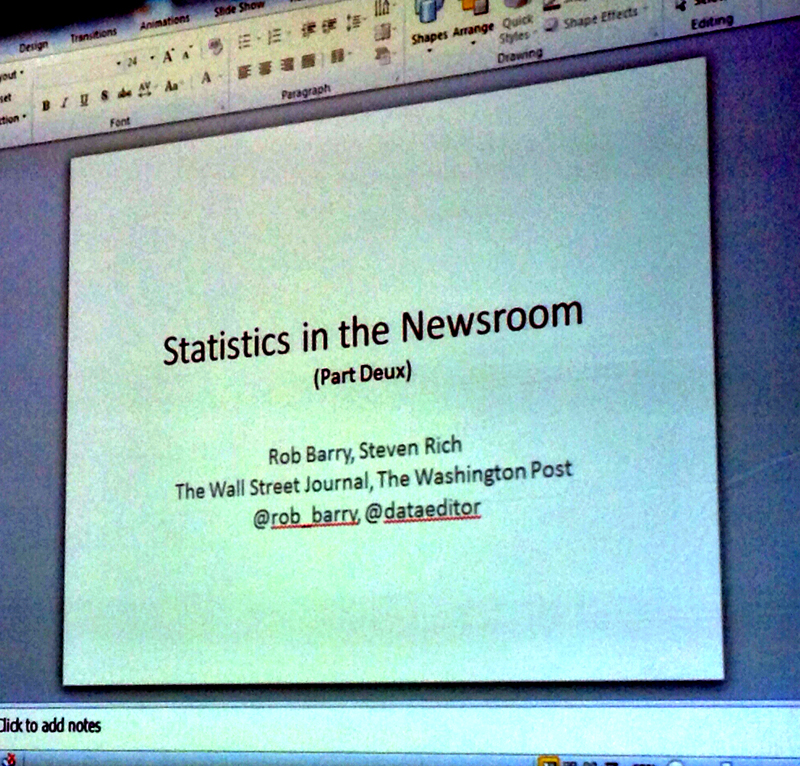
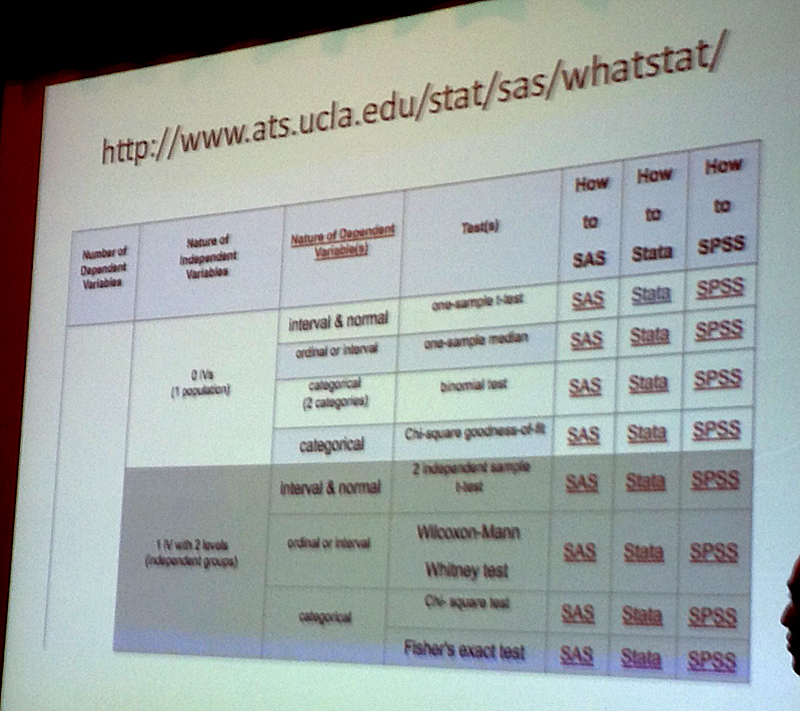

“We’re journalists, not scientists.”
Don’t overthink. Mostly you need to:
Seek the middle. It often describes the group. Check the mean vs. the median.
Also quartiles and correlation. Correlation does not equal causation.
Histograms are powerful. A visualization of distribution. You can eyeball mean vs. median.
Checking fortuitous stock trades, using a Monte Carlo simulation to see if actual profit was likely.
Fisher’s Exact Test is useful for small sample sizes and categorical data.
Linear regression is for continuous data. Logistic regression is for binary data.
Tips to help avoid mistakes:
Question: How to translate stats to English (for a story)? Answer: Think thoroughly about what you’re actually saying to boil it down. Use a methodology box/page/etc. to explain in detail.
